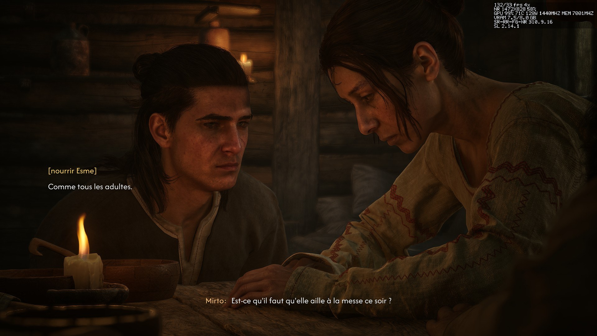
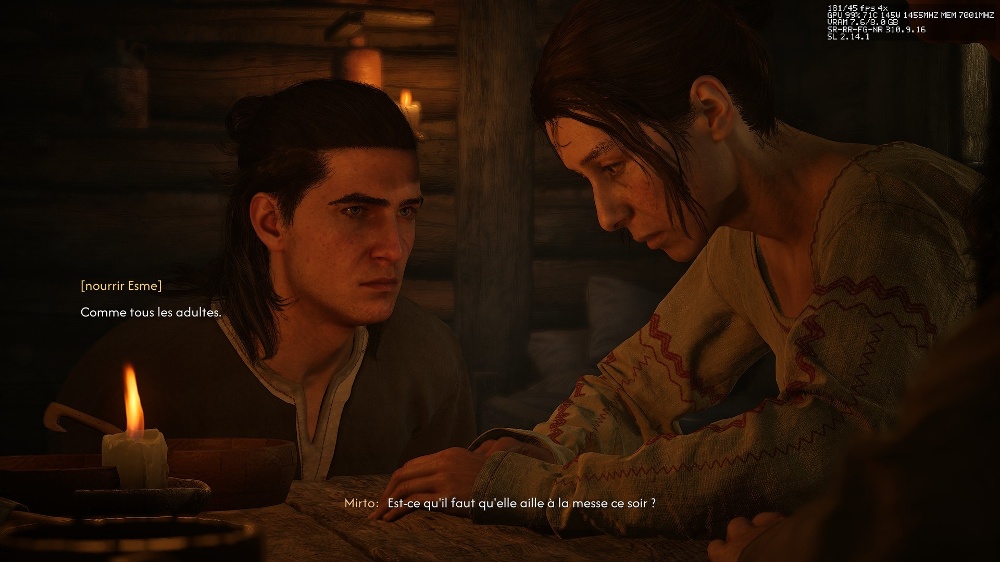

在您的 RTX 20、30 或 40 上启用帧生成与 Neural Rendering。
RTX Encore 为 RTX 20、30、40 带来最高 X6 的 DLSS 帧生成、Neural Rendering 和更快的 DLSS。1.2 系列新增实验性 Intel 引擎、实时重建选择、逐轮 NR 设置及实时锐化。RTX Encore Hub 安装模组及运行库、更新游戏并还原原始文件。
Intel XeSS / XeFG 仍高度实验性。 兼容性取决于模组、游戏、图形 API 和运行库。请附上检查后的诊断包报告问题；文件存在或请求的倍率不能证明实际渲染成功。 报告问题.
Windows 10 和 11，x64 · 英语、法语和简体中文 · 安装无需管理员权限
RTX Encore 1.2 新功能
模组 1.2.2 与 Hub 1.2.2 分别发布。模组菜单现已提供锐化，Hub 中的控制项将在后续版本提供。Hub 检查文件及运行库状态，不认证画质或实际显示帧数。
重建后实时锐化
模组 1.2.2 为 DLSS、DLAA、光线重建和替代 XeSS 新增 Off / Game / Custom。默认关闭，Custom 默认 30%。现在可使用模组菜单；Hub 控制项将在后续版本提供。
选择 DLSS 或 Intel 引擎
选择 DLSS 或实验性 XeSS 重建、DLSS-G 或搭配 XeLL 的实验性 XeFG 帧生成。通过 Hub 安装兼容运行库；支持情况取决于游戏输入和图形 API。
游戏中切换重建
实时切换 DLSS SR/RR 预设及兼容的重建引擎。Vulkan 游戏需在启动前安装兼容 Intel 运行库；修改帧生成引擎仍需重启。
逐轮 Neural Rendering
最多四轮 NR，每轮可单独设置强度和风格或继承全局设置。HDR 输入与曝光控制跟随重建引擎，不会启用显示器 HDR。
Smooth Motion 与兼容性修复
RTX 30 的 Smooth Motion 支持 621.01 驱动。模组 1.2.2 修复 SurrounDead 启动、Baldur’s Gate 3 与 OptiScaler F5 的特定 Vulkan 菜单问题，以及 OptiScaler F5 的特定 DLSS-G 兼容性问题。
清楚说明画面设置的限制
锐化会与游戏后续处理叠加；高强度可能产生光晕并放大噪点。其 Vulkan 运行、实际游戏画质和性能仍待验证。Intel 引擎仍为实验性功能。
在一台 RTX 3070 Ti Laptop 上测得，许多配置只运行了一次。实际收益取决于您的显卡和游戏。
Neural Rendering 前后对比
Neural Rendering 是 NVIDIA 的网络，作用于 DLSS 生成的画面：一到四个处理阶段，每个阶段一种风格，支持 HDR。RTX Encore 让它在 RTX 20、30 和 40 上运行，并针对 RTX 30 做了自己的优化。实验性功能，默认关闭。


The Blood of Dawnwalker，2560 × 1440，帧生成 X4，NR 310.9.16 以 1472 × 828 运行。角落的叠加信息显示了代价：关闭 NR 时 181 FPS，开启时 132 FPS。
GPU 时间都去哪了
RTX Encore 为每个处理阶段节省的 GPU 时间比例，在 RTX 3070 Ti Laptop 上测得。
RTX Encore Hub 负责安装
找文件夹、匹配 DLL 版本、保存备份：Hub 都会替您完成，并在动手之前先展示它要做什么。

Hub 日志导出
即使无法打开游戏页面，也能从设置或出错页面导出近期 Hub 活动和错误。分享前请检查压缩包。
更小的备份，保留还原能力
原始文件保存在经验证的 ZIP 备份中。旧的未压缩备份仍可还原，并在成功安装或更新后转换；还原压缩备份需使用 Hub 1.2.2 或更高版本。
记住选择
游戏页面会记住预设、倍率和选项。滚动时仍可使用返回和应用；修改仍需确认。
更快的游戏库
先显示缓存游戏，再在后台验证。收藏、卡片操作、搜索、托盘模式和记住的可执行文件选择让游戏更易访问。
合适的 NVIDIA 文件
模组支持的最新 DLSS、帧生成和 Streamline，只接受带有效 NVIDIA 签名的文件。
Neural Rendering 的 DLL
nvngx_dlssnr.dll 310.9.16，下载并验证。
每项设置都有说明
用表单编辑 rtx-encore.jsonc，对您的显卡无效的设置会变灰。
启动并验证
观察游戏的第一分钟并说明发生了什么，还可以准备一份用于报告的诊断。
社区配置
按游戏分享的设置，按您的机器排序。实验性，测试较少。
与其他模组和平共处
ReShade、OptiScaler 和 Special K 保留各自的文件名；Hub 会选择游戏真正加载的名称。
安装之前先看清楚
Hub 对一个游戏的说明是根据其文件、您的显卡和驱动推断出来的。这并不保证某项功能在该游戏中可用，也不测量任何性能。


快速开始
- 从发布页面下载
RTX-Encore-Hub-Setup-<version>.exe并运行：它只为您的账户安装。也可以下载无需安装的便携版.zip。 - 在游戏库中打开某个游戏的页面，查看这里能做什么，然后点击安装。
- 在健康检查中，启动并验证会检查第一分钟。RTX Encore 发布新版本时，点击全部更新。
支持本项目
RTX Encore 和 RTX Encore Hub 都是免费的，利用业余时间开发。无论是按月还是一次性的赞助，都能帮助它们保持免费并持续前进。
感谢我们的首批赞助者：mennogreg，以及一位希望保持匿名的赞助者。